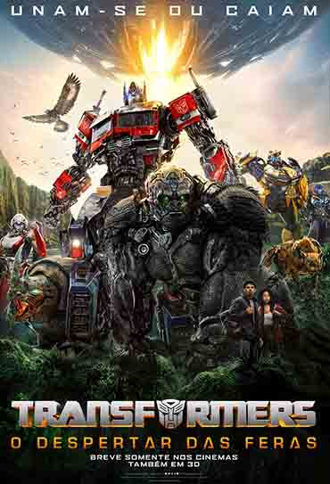

BLOG DE FILMES E DESENHOS NERD's

Sinopse:
Transformers: O Despertar das Feras traz mais uma aventura épica pelo universo dos Transformers. Ambientada nos anos 1990, o filme levará o público a uma aventura global cheia de ação, enquanto os Maximals, Predacons e Terrorcons se juntam à batalha entre os Autobots e Decepticons na Terra. Noah (Anthony Ramos), um jovem astuto do Brooklyn, e Elena (Dominique Fishback), uma ambiciosa e talentosa pesquisadora de artefatos, são arrastados para o conflito enquanto Optimus Prime e os Autobots enfrentam o terrível novo inimigo empenhado em sua destruição chamado Scourge. O filme é a sétima parcela da série de filmes Transformers, servindo como uma sequência autônoma de Bumblebee (2018) e prequela de 2007, Transformers - O Filme. Supostamente baseado no spinoff de Beast Wars: Transformers, que apresentava robôs que se transformam em animais robóticos. A série de animação para TV foi exibida no Brasil nos anos 1990, reinventando a saga dos Autobots e Decepticons.